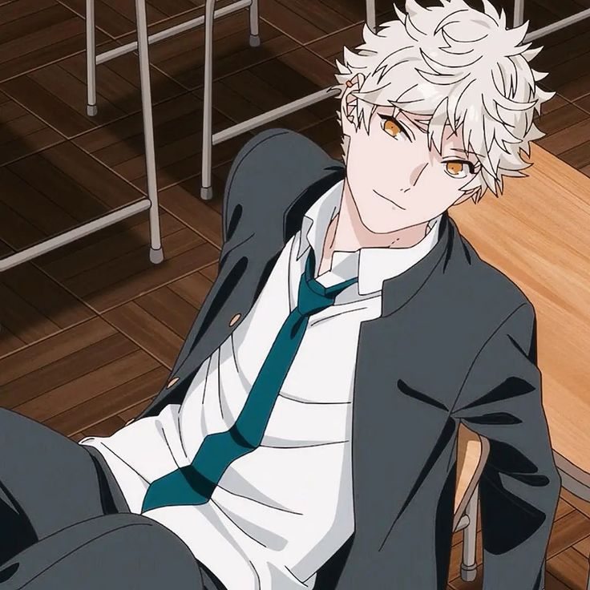
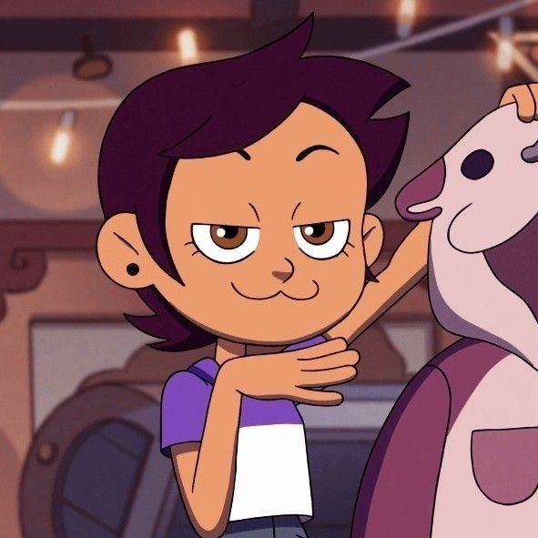
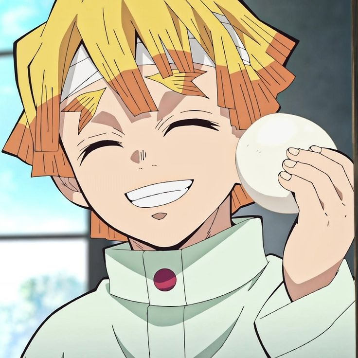
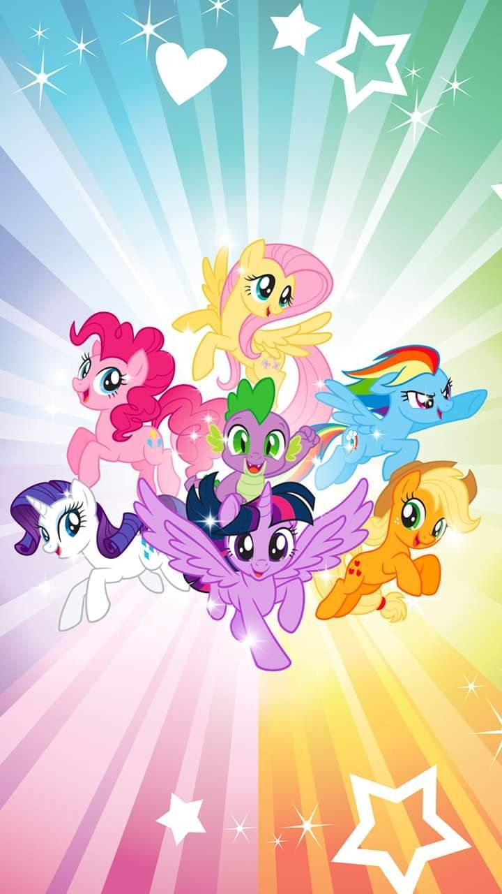
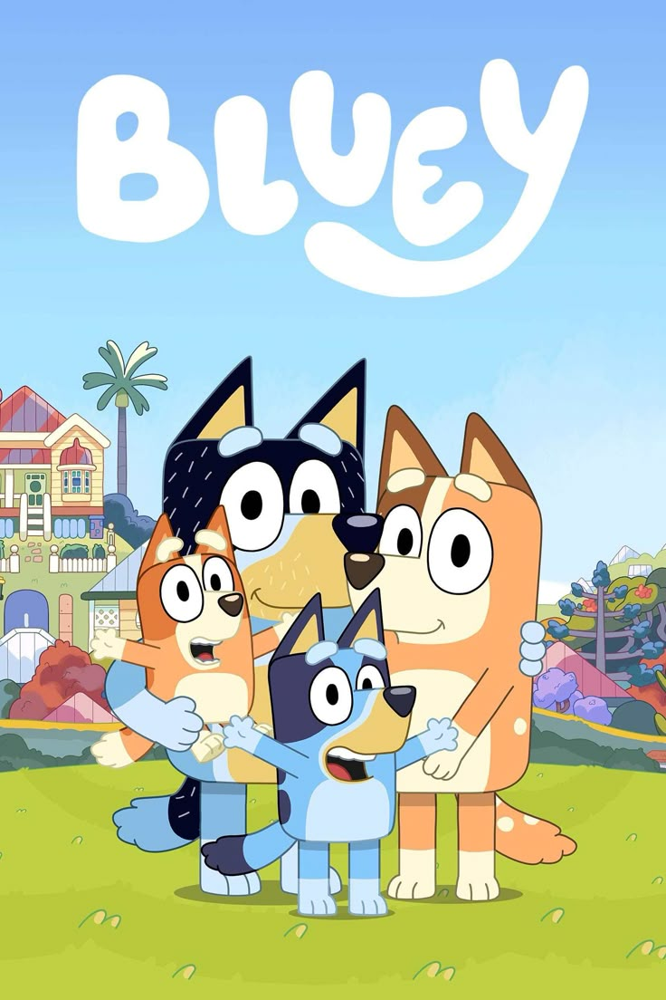
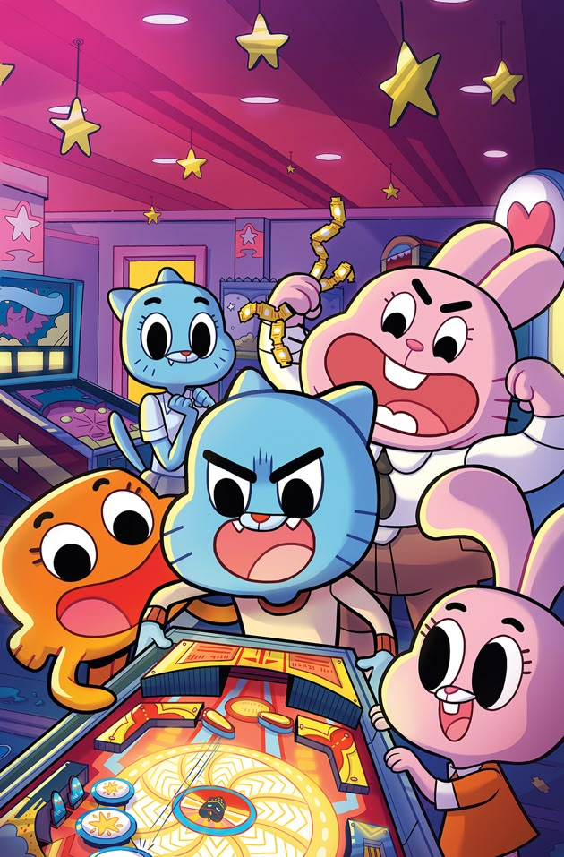

Músicas 🦐
-
Jaja chega dezembro
-
Coraline
-
Better than me
Personagens

Yatora Yaguchi
Yatora é o protagonista de Blue Period. Um estudante do ensino médio que descobre sua paixão pela arte e decide entrar na Universidade de Artes de Tóquio. (que por sinal, raquel ama muito)

Luz Noceda
Luz é a protagonista de A Casa Coruja. Uma adolescente latina que encontra um portal para um mundo mágico e decide aprender magia, mesmo sem ter poderes próprios.

Zenitsu
Zenitsu é um dos personagens principais de Demon Slayer. Apesar de seu comportamento covarde, ele demonstra grande coragem e poder quando necessário.
Filmes
10 Coisas que Odeio em Você
Bianca quer namorar, mas seu pai impõe uma condição: sua irmã mais velha, Kat, também precisa namorar. O problema é que Kat não tem interesse em relacionamentos, tornando a situação complicada para Bianca.

Suzume
Suzume é uma adolescente que encontra uma porta mágica conectando o mundo real a um reino sobrenatural. Junto com um jovem misterioso, ela embarca em uma jornada para fechar essas portas e evitar desastres naturais.
Desenhos

My Little Pony
Uma série animada que segue as aventuras de pôneis mágicos enquanto aprendem sobre amizade e enfrentam desafios no reino de Equestria. (#RaquelÉuma)

Bluey
Bluey é uma filhote de cachorro cheia de energia que adora brincar e transformar o cotidiano em aventuras incríveis com sua família.

O Incrível Mundo de Gumball
Gumball é um gato azul que vive diversas situações engraçadas e surreais com sua família e amigos na cidade de Elmore.